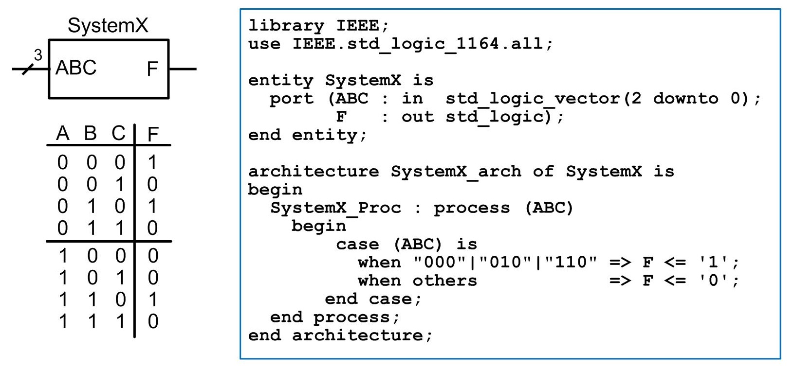
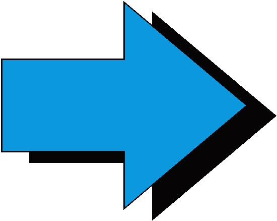
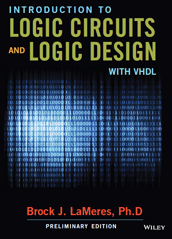

|  |  |
This is the Desire2Learn page for EELE 367. You will find links to everything in the Content area (files, homework, lab handouts, data sheets, etc.). Some content will show up under multiple areas tools. For example, many of the homework assignments will require you to upload your VHDL design files and simulation waveforms to a DropBox. A link for a particular homework will be placed in "Content", but it will also show up if you click on "DropBox". Here are links to PDFs of the course syllabus, schedule, and grading breakdown:
Course Overview
This course is a continuation of EE261 and covers large scale digital system design using a hardware description language (VHDL). This course covers the VHDL language in depth and explains how to use it to describe complex combinational circuits, synchronous sequential logic circuits, and computer systems. Functional verification of VHDL designs is accomplished using an logic simulator. This course includes a weekly lab where students will get hands-on experience implementing digital systems on Field Programmable Gate Arrays.
Instructor
Dr. Brock J. LaMeres (call me Brock)
533 Cobleigh Hall
email: lameres@ece.montana.edu (don't use the D2L email system for this course)
Lab Instructor
Krishna Chattergoon
511 Cobleigh Hall
email: krishna.chattergoon@msu.montana.edu
Time & Location
Lecture (001): MWF, 11:00am – 11:50am, Gains 043
Lab (002): W, 2:10pm – 4:00pm, COBH 601
Lab (003): W, 4:10pm – 6:00pm, COBH 601
Lab (004): W, 6:10pm - 8:00pm, COBH 601
Textbook (Required)
|  |
“Introduction to Logic Circuits and Logic Design with VHDL” |